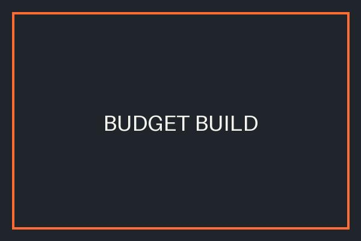

Budget Build
Intended use: Students and everyday tasks
Components: AMD Ryzen 5 5600G; A520 motherboard; 16 GB DDR4-3200; 500 GB NVMe SSD; 450 W PSU; micro-ATX case
Estimated total: ₱26,000
Integrated graphics keep the cost low while handling school work, streaming, and light gaming.